Displaying data using graphs and tables
You can draw plots using commands in base R or use
ggplot() from the tidyverse. Each option has passionate
adherents and it is pointless to argue. Try both and see which you find
most appealing and easiest to use. If you need help, check the “Graphs
& Tables” tab at the R tips page.
Data set 1: Mammal body mass
These data were published as a data paper in Ecology and deposited in the Ecological Archives (Smith et al. 2003. Body mass of late Quaternary mammals. Ecology 84: 3403.) See the metadata for a description.
Most of the variables are categorical, with multiple named
categories. continent includes mammals on islands
(“Insular” category) whereas “Oceanic” refers to marine mammals. Body
mass (in grams) is the sole numeric variable. The status
variable indicates whether species is currently present in the wild
(extant), extinct as of late Pleistocene (extinct), extinct within the
last 300 years (historical), or an introduced species
(introduction).
Read and examine the data
The original data were saved in mammals.csv file on our server here. Download the file to your computer and open in a spreadsheet program (e.g., Excel, Calc) to have a look at it.
Start R and read the contents of the file to a data frame.
Use the head() function to view the first few lines of
the data frame on the screen. You’ll see that every row represents the
data for a different mammal species.
Frequency tables
Which continent has the greatest number of mammal species? Which has the least? Make a table of the frequency of cases on each continent (remember that the category “NA” in continent stands for North America, not missing data).
You’ll notice that one of the continents is missing - North America. Yet if you open the spreadsheet you’ll see that it is in the data set. Can you figure out why it is missing? Answer is at the bottom of this page*, but see if you can figure it out yourself first. (Don’t waste too much time on it.)
You’ll also notice in the frequency table for the variable
continentthat there’s a typo in the data. One case is shown as having the continent “Af” rather than “AF for Africa”. Fix this using the command line in R and recalculate the frequency table.How many extinct mammals are recorded in the data file? Use a frequency table to find out.
Create a two-way frequency table (contingency table) showing the status of mammal species on each continent.
It is easier to appreciate the relative number of extinctions on the continents if you also include the marginal sums in the table (to give the total number of species). Without doing the calculations, you can probably see which continent has the greatest number of extinctions relative to the number of extant species. Which continent?
Answers
All lines below beginning with double hashes are R output
# Load the packages you might need
library(tidyverse)
# Read and inspect the data
mammals <- read.csv(url("https://www.zoology.ubc.ca/~bio501/R/data/mammals.csv"))
head(mammals)## continent status order family genus species mass.grams
## 1 AF extant Artiodactyla Bovidae Addax nasomaculatus 70000.3
## 2 AF extant Artiodactyla Bovidae Aepyceros melampus 52500.1
## 3 AF extant Artiodactyla Bovidae Alcelaphus buselaphus 171001.5
## 4 AF extant Artiodactyla Bovidae Ammodorcas clarkei 28049.8
## 5 AF extant Artiodactyla Bovidae Ammotragus lervia 48000.0
## 6 AF extant Artiodactyla Bovidae Antidorcas marsupialis 39049.9- Number of mammal species on each continent.
table(mammals$continent)##
## Af AF AUS EA Insular Oceanic SA
## 1 1033 346 1033 1484 78 977- Fix the problem of missing North America (unfortunately coded as NA in the continent column).
mammals <- read.csv(url("https://www.zoology.ubc.ca/~bio501/R/data/mammals.csv"),
na.strings = "")
# tidyr version
mammals <- read_csv(url("https://www.zoology.ubc.ca/~bio501/R/data/mammals.csv"),
na = c(""))- Fix “Af” typo.
which(mammals$continent=="Af")## [1] 322mammals$continent[322]<-"AF"
table(mammals$continent)##
## AF AUS EA Insular Oceanic SA
## 1034 346 1033 1484 78 977- How many extinct mammals? The table shows that 242 species of mammal are listed as extinct.
z <- table(mammals$status)
z##
## extant extinct historical introduction
## 5388 242 84 17- Extinction status by continent (contingency table). Australia (AUS) seems to have the greatest number of extinct species relative to the total number. This is easier to appreciate if the row sums are included in the table.
# Contingency table
table(mammals$continent, mammals$status)##
## extant extinct historical introduction
## AF 1017 13 4 0
## AUS 261 45 23 17
## EA 1027 0 6 0
## Insular 1405 29 50 0
## Oceanic 78 0 0 0
## SA 900 77 0 0# Include row sums using base R
mytab <- table(mammals$continent, mammals$status)
addmargins(mytab, margin = c(1,2), FUN = sum, quiet = TRUE)##
## extant extinct historical introduction sum
## AF 1017 13 4 0 1034
## AUS 261 45 23 17 346
## EA 1027 0 6 0 1033
## Insular 1405 29 50 0 1484
## Oceanic 78 0 0 0 78
## SA 900 77 0 0 977
## sum 4688 164 83 17 4952# Include row sums using tidyverse. The last mutate command is optional and converts NA to zero.
mytab <- summarize(group_by(mammals, continent, status), n = n())
mytab <- spread(mytab, status, n)
mytab## # A tibble: 7 × 5
## # Groups: continent [7]
## continent extant extinct historical introduction
## <chr> <int> <int> <int> <int>
## 1 AF 1017 13 4 NA
## 2 AUS 261 45 23 17
## 3 EA 1027 NA 6 NA
## 4 Insular 1405 29 50 NA
## 5 Oceanic 78 NA NA NA
## 6 SA 900 77 NA NA
## 7 <NA> 700 78 1 NAmytab <- mutate(mytab, across(everything(), ~replace_na(., 0)))
as.data.frame(mytab)## continent extant extinct historical introduction
## 1 AF 1017 13 4 0
## 2 AUS 261 45 23 17
## 3 EA 1027 0 6 0
## 4 Insular 1405 29 50 0
## 5 Oceanic 78 0 0 0
## 6 SA 900 77 0 0
## 7 <NA> 700 78 1 0Graphing frequency distributions
Plot the number of mammal species on each continent using a simple bar graph. Include a label for the y axis.
The plot categories are listed in alphabetical order by default, which is arbitrary and makes the visual display less efficient than other possibilities. What is the most sensible order for the categories? Redo the bar graph using this order.
Generate a histogram of the body masses of mammal species. How informative is that?!
Create a new variable in the mammal data frame: the log (base 10) of body mass. (See “Transform” on the R tips “Data” page if you need help with this.)
Generate a histogram of log body mass. Is this more informative? Morphological data commonly require a log-transformation to analyze.
Redo the previous histogram but use a bin width of 2 units. How much detail is lost? Redo the histogram but try a bin width of of 1; then try 0.5; and then 0.1. Which bin width is superior?
Redo the histogram, but display probability density instead of frequency.
How does the frequency distribution of log body mass depart from a normal distribution? Answer by visual examination of the histogram you just created. Now answer by examining a normal quantile plot instead. Which display is more informative? Do the data conform to a normal distribution?
Optional: redraw the histogram of log body mass and superimpose a normal density curve to help visualize deviations from normality. In what ways do the data depart from normality?
Answers
# 1. Bar plot of mammal species by continent
barplot(table(mammals$continent), col="firebrick", cex.names=0.8,
ylim=c(0,1600), las = 1)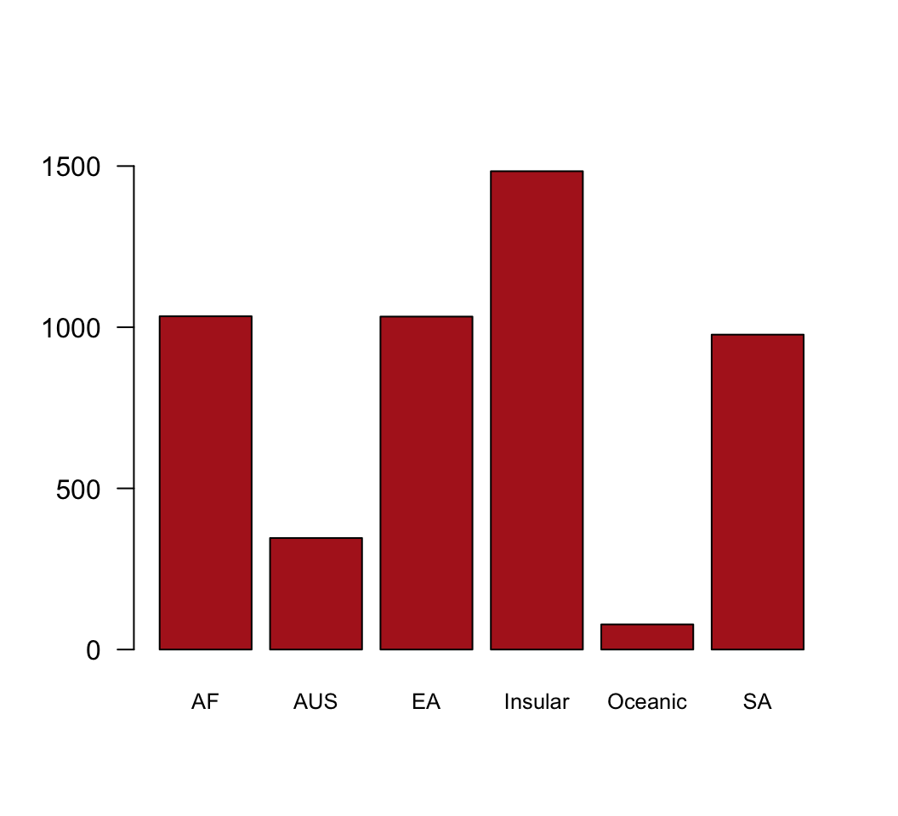
# 2. It is best to order the categories in order of decreasing frequency.
barplot(sort(table(mammals$continent), decreasing=TRUE), col="firebrick",
cex.names=0.8, las = 1, ylim=c(0,1600), ylab="Frequency")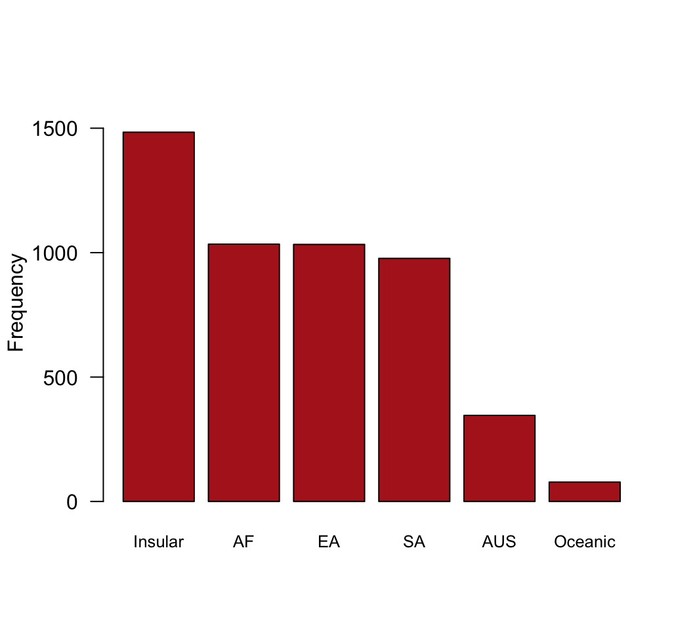
Alternatively, use ggplot() instead of base R.
library(ggplot2)
ggplot(mammals, aes(x = continent)) +
geom_bar(stat = "count", fill = "firebrick") +
labs(x = "Continent", y = "Frequency") +
theme_classic()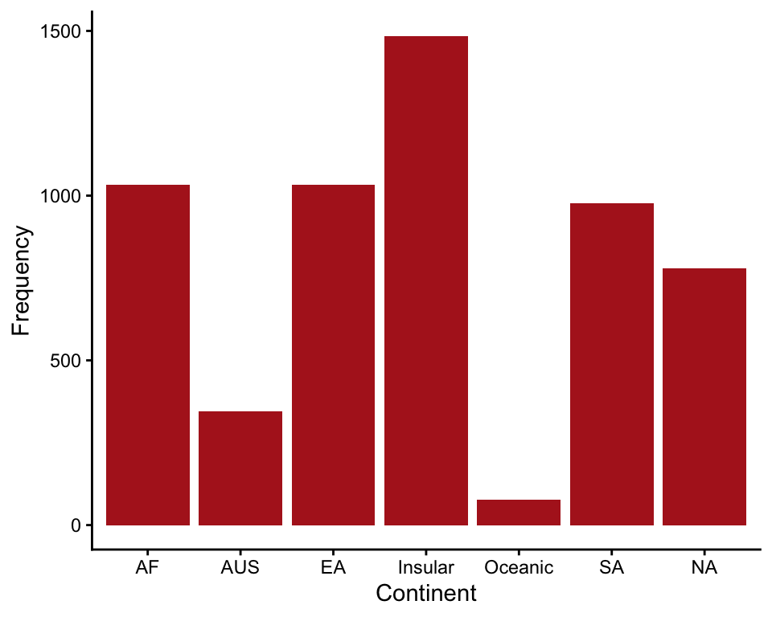
# To order by category in ggplot, first make a new factor variable
mammals$continent_ordered <- factor(mammals$continent,
levels = names(sort(table(mammals$continent), decreasing = TRUE)) )
ggplot(mammals, aes(x = continent_ordered)) +
geom_bar(stat = "count", fill = "firebrick") +
labs(x = "Continent", y = "Frequency") +
theme_classic()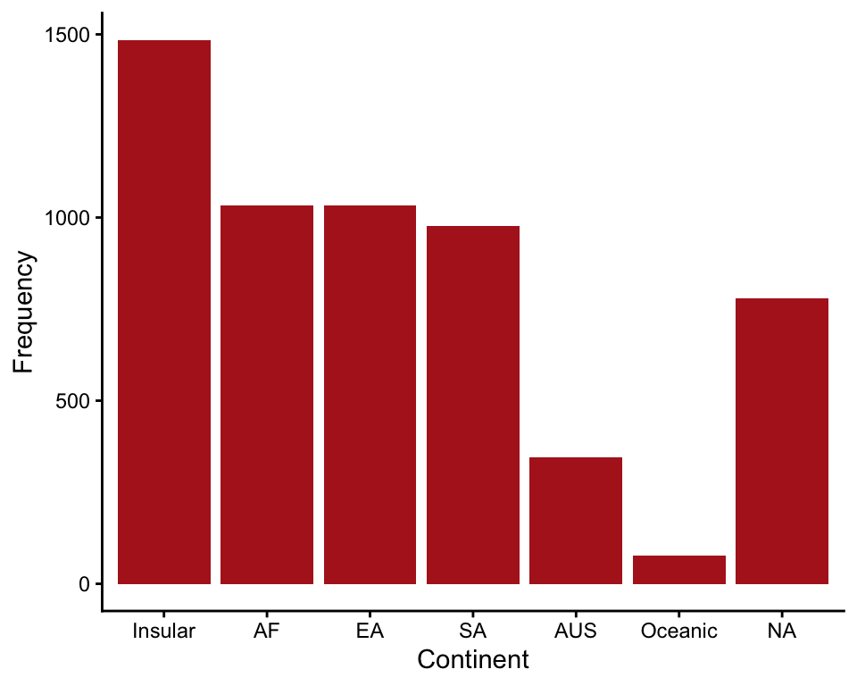
Histogram of body masses. Results with different bin widths not shown.
# 3. Histogram
hist(mammals$mass.grams, col="firebrick", right = FALSE, las = 1,
xlab = "Body mass (g)", main = "")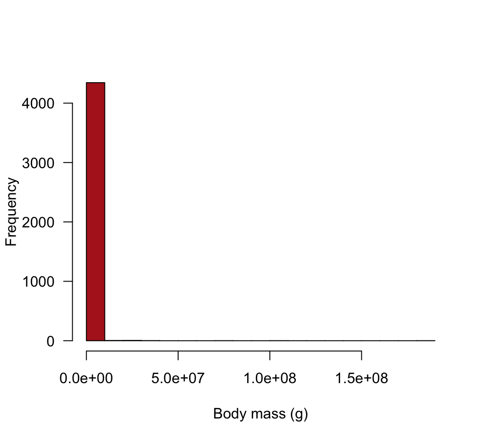
ggplot(mammals, aes(x = mass.grams)) +
geom_histogram(fill = "firebrick", col = "black", boundary = 0) +
labs(x = "log10 body mass", y = "Frequency") +
theme_classic()## `stat_bin()` using `bins = 30`. Pick better value `binwidth`.## Warning: Removed 1372 rows containing non-finite outside the scale range
## (`stat_bin()`).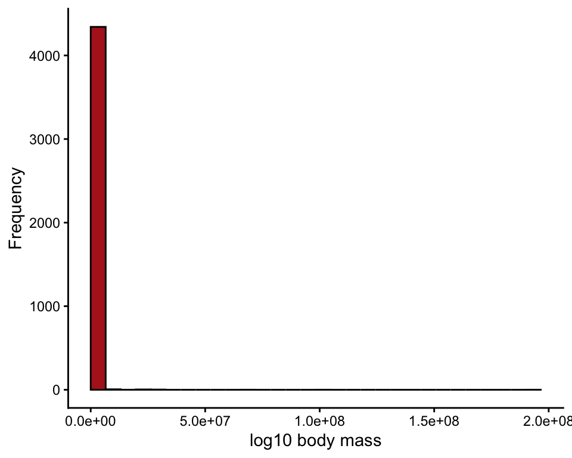
# 4. Add a new variable, log10 of body mass
mammals$logmass <- log10(mammals$mass.grams)# 5. Histogram
hist(mammals$logmass, col="firebrick", right = FALSE, las = 1,
xlab = "Log10 body mass", main = "")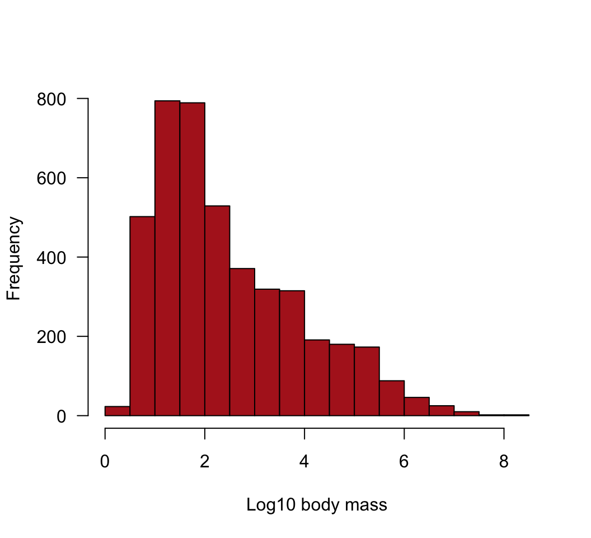
or
ggplot(mammals, aes(x = logmass)) +
geom_histogram(fill = "firebrick", col = "black", boundary = 0, binwidth = 0.5) +
labs(x = "log10 body mass", y = "Frequency") +
theme_classic()## Warning: Removed 1372 rows containing non-finite outside the scale range
## (`stat_bin()`).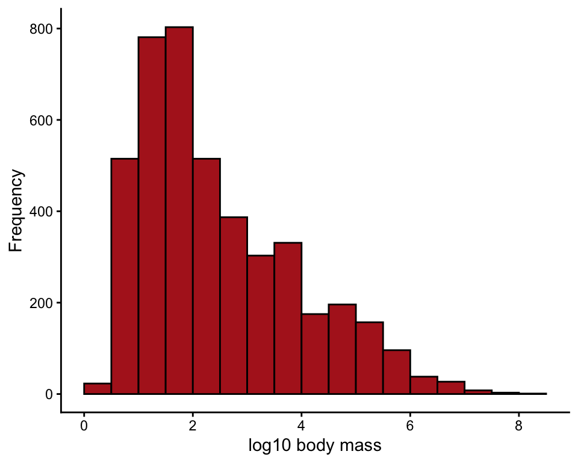
# 6. Vary bin width
ggplot(mammals, aes(x = logmass)) +
geom_histogram(fill = "firebrick", col = "black", binwidth = 2, boundary = 0) +
labs(x = "log10 body mass", y = "Frequency") +
theme_classic()## Warning: Removed 1372 rows containing non-finite outside the scale range
## (`stat_bin()`).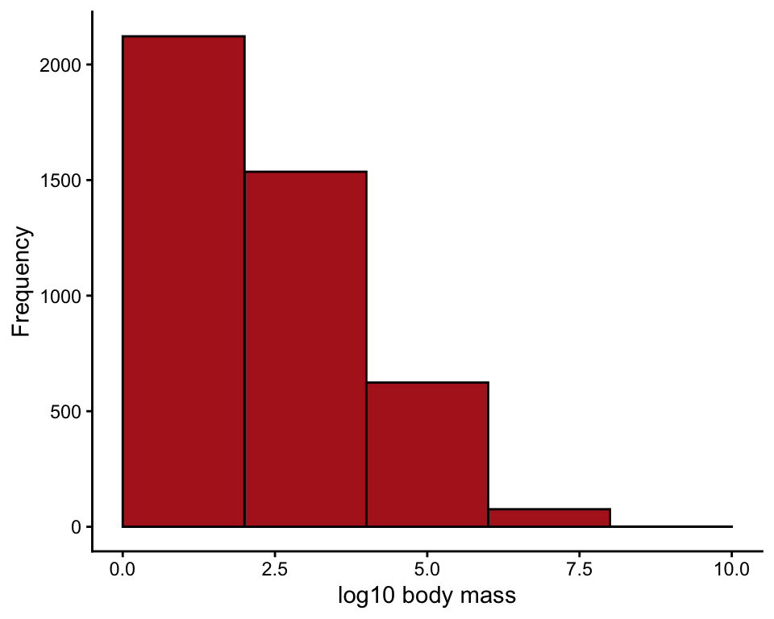
ggplot(mammals, aes(x = logmass)) +
geom_histogram(fill = "firebrick", col = "black", binwidth = 1, boundary = 0) +
labs(x = "log10 body mass", y = "Frequency") +
theme_classic()## Warning: Removed 1372 rows containing non-finite outside the scale range
## (`stat_bin()`).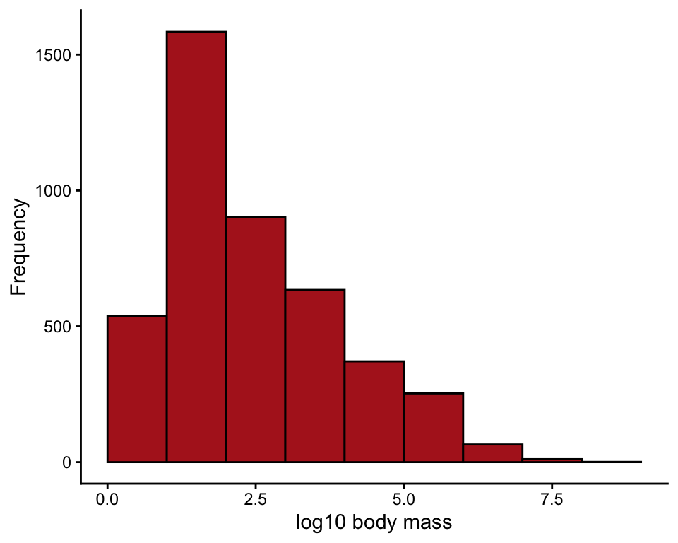
ggplot(mammals, aes(x = logmass)) +
geom_histogram(fill = "firebrick", col = "black", binwidth = 0.5, boundary = 0) +
labs(x = "log10 body mass", y = "Frequency") +
theme_classic()## Warning: Removed 1372 rows containing non-finite outside the scale range
## (`stat_bin()`).
ggplot(mammals, aes(x = logmass)) +
geom_histogram(fill = "firebrick", col = "black", binwidth = 0.1, boundary = 0) +
labs(x = "log10 body mass", y = "Frequency") +
theme_classic()## Warning: Removed 1372 rows containing non-finite outside the scale range
## (`stat_bin()`).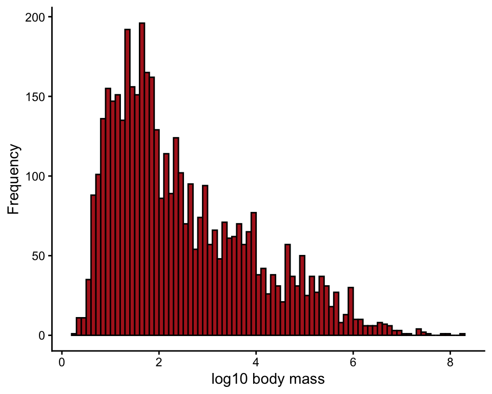
# 6. Change bin width to 2
hist(mammals$logmass, col="firebrick", right = FALSE, las = 1,
xlab = "Log10 body mass", main = "", breaks = seq(0, 10, by = 2))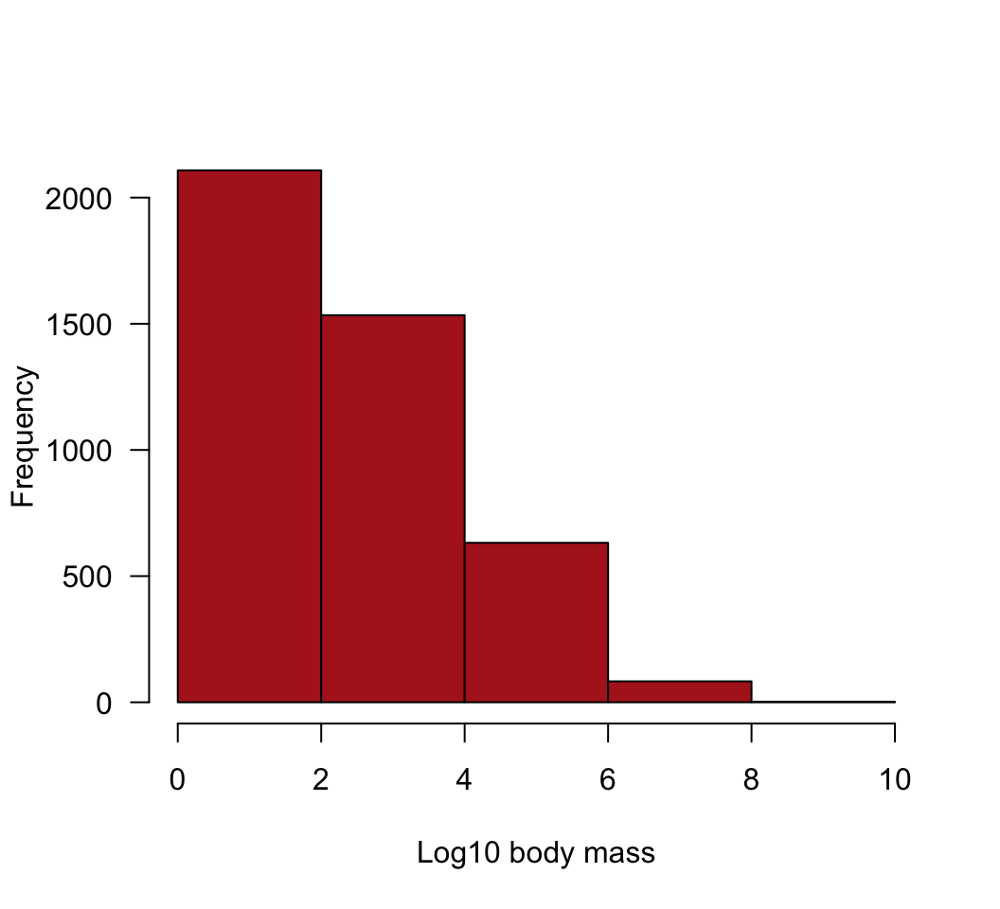
or
ggplot(mammals, aes(x = logmass)) +
geom_histogram(fill = "firebrick", col = "black", binwidth = 2, boundary = 0) +
labs(x = "log10 body mass", y = "Frequency") +
theme_classic()## Warning: Removed 1372 rows containing non-finite outside the scale range
## (`stat_bin()`).
- Plot density instead
hist(mammals$logmass, col = "firebrick", right = FALSE, las = 1, prob = TRUE,
xlab = "Log10 body mass", main = "", breaks = seq(0, 8.5, by = 0.5))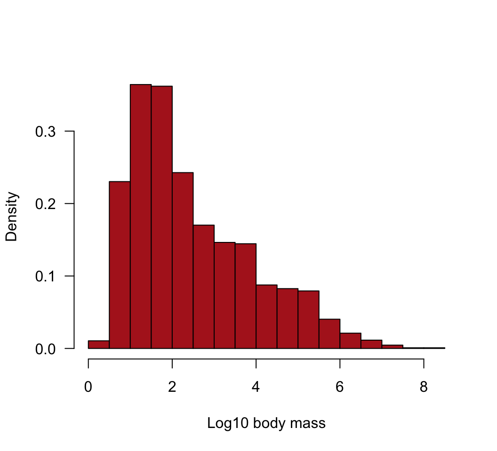
or
ggplot(mammals, aes(x = logmass)) +
geom_histogram(fill = "firebrick", col = "black", binwidth = 0.5,
boundary = 0, aes(y = after_stat(density))) +
labs(x = "log10 body mass", y = "Density") +
theme_classic()## Warning: Removed 1372 rows containing non-finite outside the scale range
## (`stat_bin()`).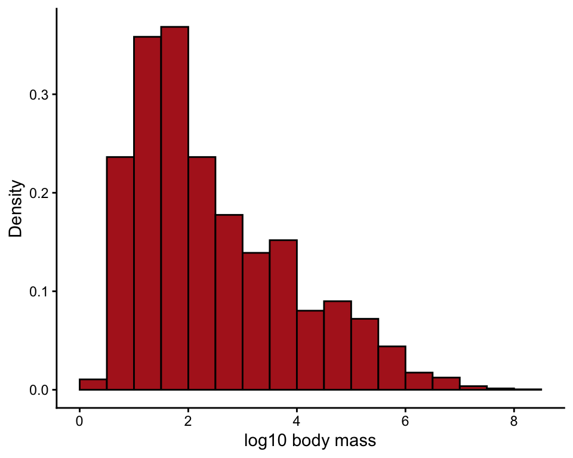
- Normal quantile plot.
qqnorm(mammals$logmass)
qqline(mammals$logmass) # adds the straight line for comparison through 1st and 3rd quartiles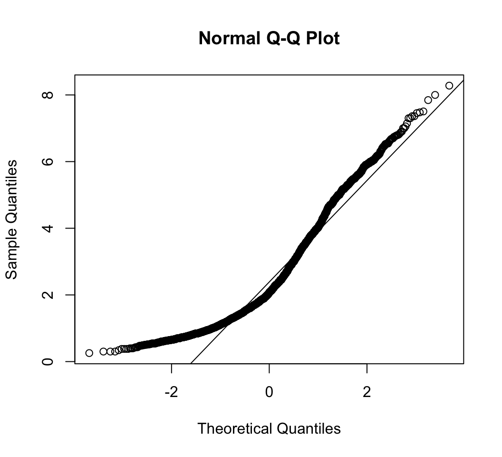
- Histogram with best-fit normal curve superimposed.
# The curve function is fussy about the name of the variable: must be "x"
x <- mammals$logmass
hist(x, col="firebrick", right = FALSE, las = 1, prob = TRUE,
xlab = "Log10 body mass", main = "", breaks = seq(0, 8.5, by = 0.5))
m <- mean(x, na.rm = TRUE)
s <- sd(x, na.rm = TRUE)
curve(dnorm(x, mean = m, sd = s), col="red", lwd = 2, add = TRUE)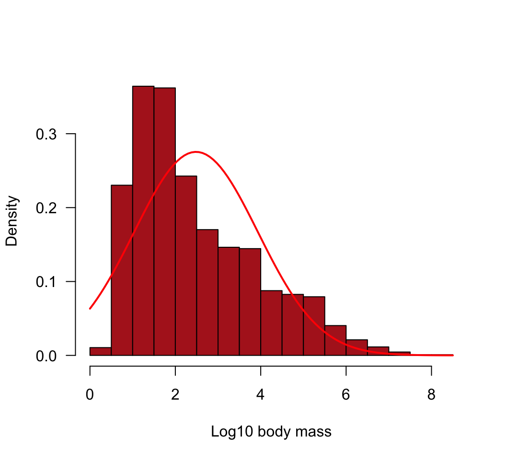
Comparing frequency distributions
Use a box plot to compare the distribution of body sizes (log scale most revealing) of mammals having different extinction status. Are extinct mammals similar to, larger than, or smaller than, extant mammals?
Examine the previous box plot. How do the shapes of the body size distributions compare between extinct and extant mammals?
Redo the previous box plot but make box width proportional to the square root of sample size. Add a title to the plot.
Optional: Draw a violin plot to compare the frequency distribution of log body sizes of mammals having different extinction status. Which do you find is more revealing about the shapes of the body size distributions: box plot or violin plot?
Use multiple histograms to compare the frequency distribution of log body sizes of mammals having different extinction status. Stack the panels one above the other. In this plot, how easy is it to visualize differences among treatments in the distributions compared to your previous plots?
Make a table of the median log body mass of each extinction-status group of mammals. Are the values consistent with the plotted distributions?
Answers
The graphs show that extinct mammals tend to have large mass compared to extant mammals. The frequency distributions for these two groups also have opposite skew, with extinct mammals having left skew.
# 1. Box plot to compare the distribution of body sizes
boxplot(logmass ~ status, data = mammals, ylab = "log10 body mass",
col = "goldenrod1", las = 1)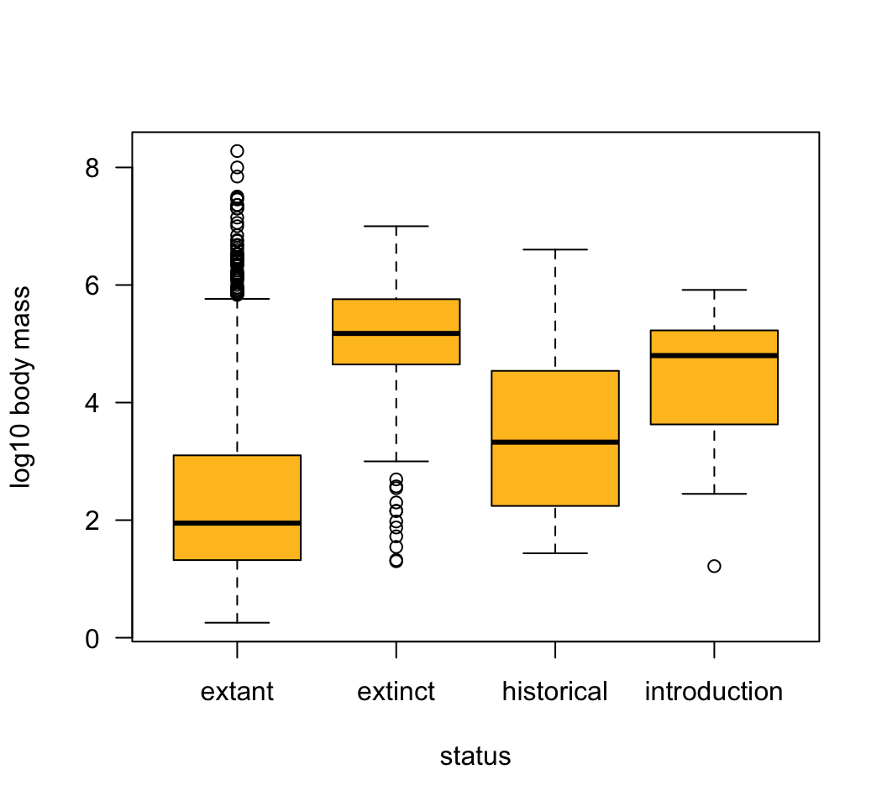
or
ggplot(mammals, aes(x = status, y = logmass)) +
geom_boxplot(fill = "goldenrod1", notch = FALSE) +
labs(x = "Status", y = "Log10 body mass") +
theme_classic()## Warning: Removed 1372 rows containing non-finite outside the scale range
## (`stat_boxplot()`).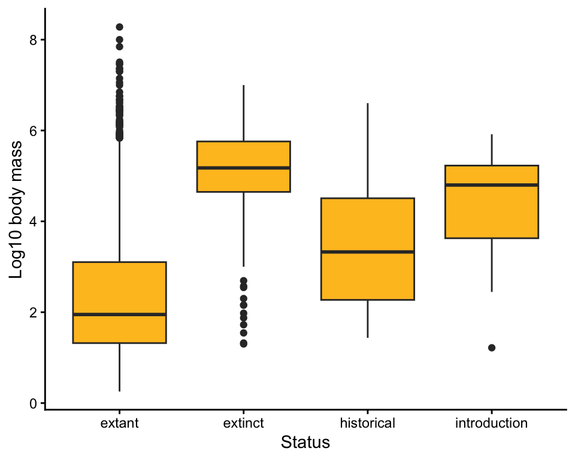
# 3. Box width proportional to the square root of sample size
boxplot(logmass ~ status, data = mammals, ylab = "log10 body mass",
col = "goldenrod1", las = 1, varwidth = TRUE,
main = "Body sizes of mammals by status")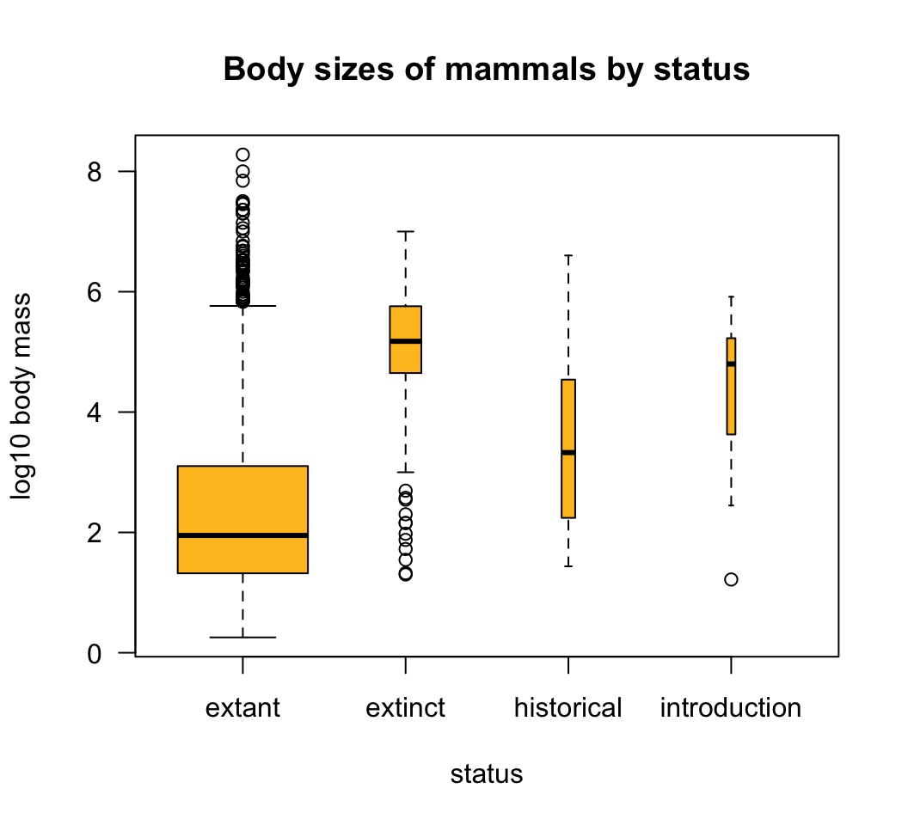
# 4. Violin plot
ggplot(mammals, aes(x = status, y = logmass)) +
geom_violin(fill = "goldenrod1") +
labs(x = "Status", y = "Log10 body mass") +
stat_summary(fun = mean, geom = "point", color = "black") +
theme_classic()## Warning: Removed 1372 rows containing non-finite outside the scale range
## (`stat_ydensity()`).## Warning: Removed 1372 rows containing non-finite outside the scale range
## (`stat_summary()`).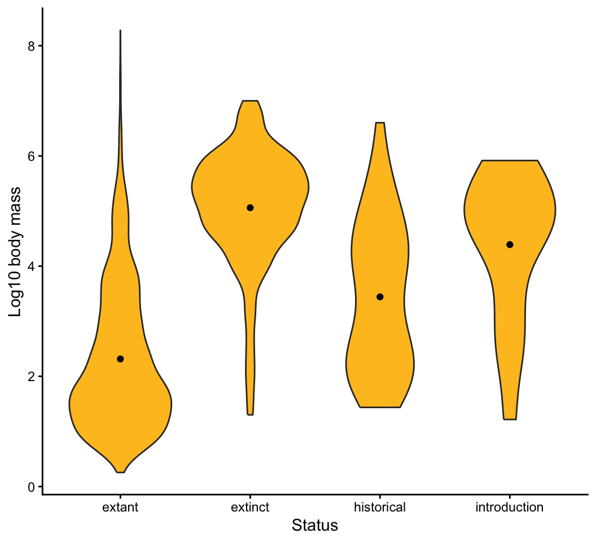
# 5. Multiple histograms
ggplot(mammals, aes(x = logmass)) +
geom_histogram(fill = "goldenrod1", col = "black",
binwidth = 0.2, boundary = 0) +
labs(x = "log10 body mass", y = "Frequency") +
facet_wrap(~status, ncol = 1, scales = "free_y", strip.position = "right") +
theme_classic()## Warning: Removed 1372 rows containing non-finite outside the scale range
## (`stat_bin()`).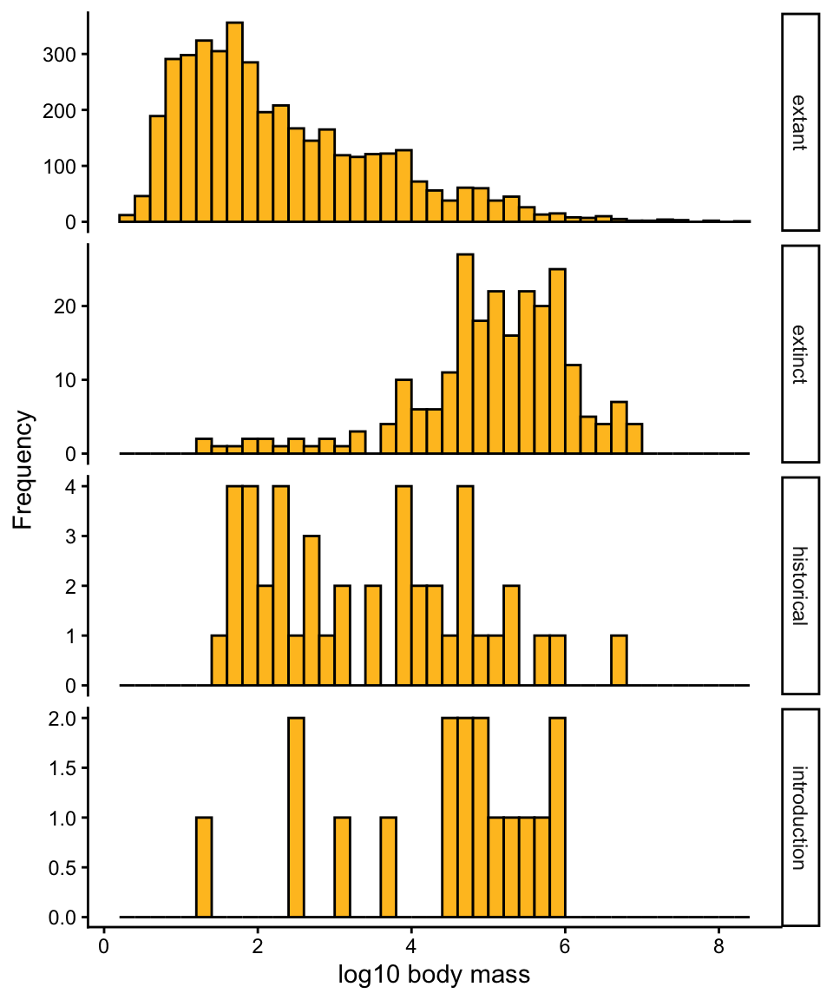
# 6. Table of median log mass by status
# Base R
median.log10.mass <- tapply(mammals$logmass, mammals$status, median, na.rm=TRUE)
cbind(median.log10.mass)## median.log10.mass
## extant 1.949390
## extinct 5.176091
## historical 3.326606
## introduction 4.799341# Tidyverse
mytab <- summarize(group_by(mammals, status), meanlogMass = median(logmass, na.rm = TRUE))
mytab## # A tibble: 4 × 2
## status meanlogMass
## <chr> <dbl>
## 1 extant 1.95
## 2 extinct 5.18
## 3 historical 3.33
## 4 introduction 4.80Paired data
Paired data, such as repeated measures, require special plotting techniques to visualize the patterns while preserving information on pairing.
Here we construct a paired data plot for the frequency of extant and extinct mammal species on each continent.
- Create a new variable in the mammal data frame that combines the
extinct and historical status categories into a single category called
“gone”. Remove the Insular and Oceanic continents from the data set so
we are working only with the continents. Finally, drop the introduction
category. To get us more quickly to the plotting step, here’s some code
to make the new data set:
Keep only actual continents and drop the “introduction” category from status.newmammals <- subset(mammals, continent != "Insular" & continent != "Oceanic" & (status == "extinct" | status == "extant" | status == "historical") )Make a new status variable that combines the two extinction categories.newmammals$newstatus <- newmammals$status # initialize the new variable newmammals$newstatus[newmammals$status %in% c("extinct", "historical")] <- "gone"Make a frequency table of the number of species by continent and newstatus.mytab <- table(newmammals$continent, newmammals$newstatus, dnn = c("continent", "newstatus"))We want it in long format, so convert to a “flat” frequency table.mydata <- data.frame(mytab)
Notice it is in long format, which R prefers.mydata
- Make a paired data plot showing the log10 frequency of species for the two categories of the newstatus variable. What pattern do you notice?
Answers
There is a tendency for the continents with the fewest mammal species to have relatively more species that have lately disappeared.
# 1. The data set you made
print(mydata)## continent newstatus Freq
## 1 AF extant 1017
## 2 AUS extant 261
## 3 EA extant 1027
## 4 SA extant 900
## 5 AF gone 17
## 6 AUS gone 68
## 7 EA gone 6
## 8 SA gone 77# 2. Paired data plot in base R
interaction.plot(response = log10(mydata$Freq), x.factor = mydata$newstatus, trace.factor = mydata$continent,
legend = FALSE, lty = 1, xlab = "", ylab = "log10 frequency",
type = "b", pch = 16, las = 1, col = "firebrick")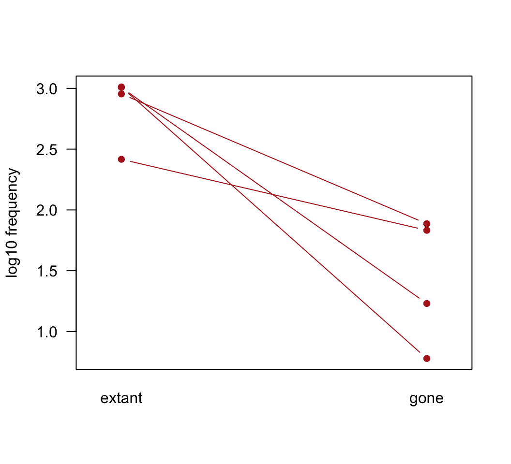
# Or use ggplot
ggplot(mydata, aes(y = log10(Freq), x = newstatus)) +
geom_line(aes(group = continent)) +
geom_point(size = 3, col = "firebrick", alpha = 0.5) +
labs(x = "", y = "log10 frequency") +
theme_classic() +
theme(text = element_text(size = 14))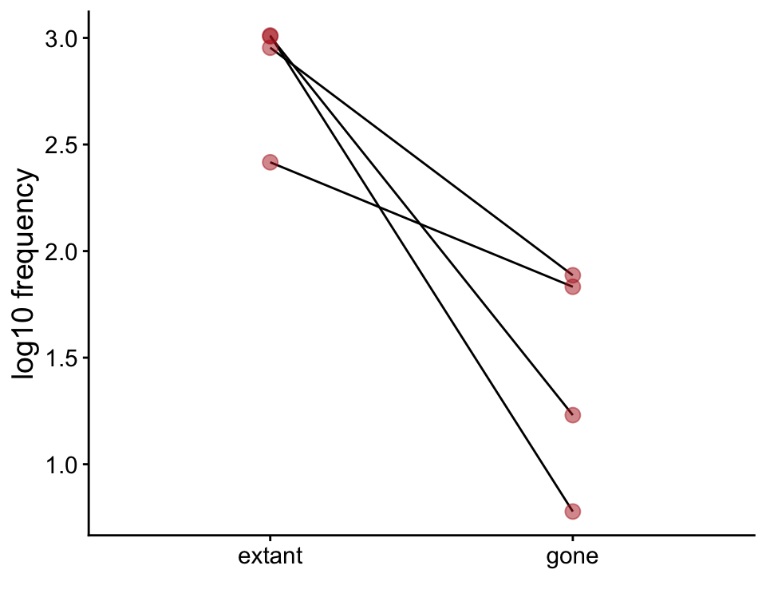
Data set 2: Fly sex and longevity
The data are from L. Partridge and M. Farquhar (1981), Sexual
activity and the lifespan of male fruitflies,
Download and inspect
Download the file to your computer and open in a spreadsheet program to have a look at it. View the first few lines of the data frame on the screen, and familiarize yourself with the variable names.
Our goal here is to find a plot type that clearly and efficiently visualizes the patterns in the data, especially the differences among groups.
Analyze
Read the data file into a new data frame.
Use a strip chart to examine the distribution of longevities in the treatment groups. Try the jitter method to reduce overlap between points. If needed, adjust the size or rotation of the treatment labels so that they all fit on the graph. What pattern of differences between treatments in longevity is revealed? Males from which treatments have the highest longevity? Which have the lowest longevity?
Compare the strip chart to a box plot of the same data. Is the pattern in the data as clear in both types of plot?
The variable
thoraxstands for thorax length, which was used as a measure of body size. The measurement was included in case body size also affected longevity. Usingggplot(), produce a scatter plot of thorax length and longevity. Makelongevitythe response variable (i.e., plot it on the vertical axis). Is there a relationship?Redraw the scatter plot using
ggplot()but this time use different symbols and/or colors for the different treatment groups. Add a legend to identify the symbols. After controlling for differences among males in size, males from which treatments have the highest longevity on average? Which have the lowest longevity?Redraw, adding regression lines to your figure, separately for each group.
You can see how it can be fiendishly difficult to build a clean visual showing the pattern in the data when there are multiple groups. Redraw the figure again using just one color and symbol, but this time use
facet_wrap()to plot the data in multiple panels, one per treatment group. Compare your results with those from (6). Which method shows the differences between groups most clearly?
Answers
# 1. Read nd inspect data
x <- read.csv(url("https://www.zoology.ubc.ca/~bio501/R/data/fruitflies.csv"),
stringsAsFactors = FALSE)
head(x)## Npartners treatment longevity.days thorax.mm
## 1 8 8 pregnant females 35 0.64
## 2 8 8 pregnant females 37 0.68
## 3 8 8 pregnant females 49 0.68
## 4 8 8 pregnant females 46 0.72
## 5 8 8 pregnant females 63 0.72
## 6 8 8 pregnant females 39 0.76- Strip chart in base R.
# base R
stripchart(longevity.days ~ treatment, data = x, vertical = TRUE,
method = "jitter", pch=16, col = "firebrick", cex.axis=0.7,
ylab="Longevity (days)")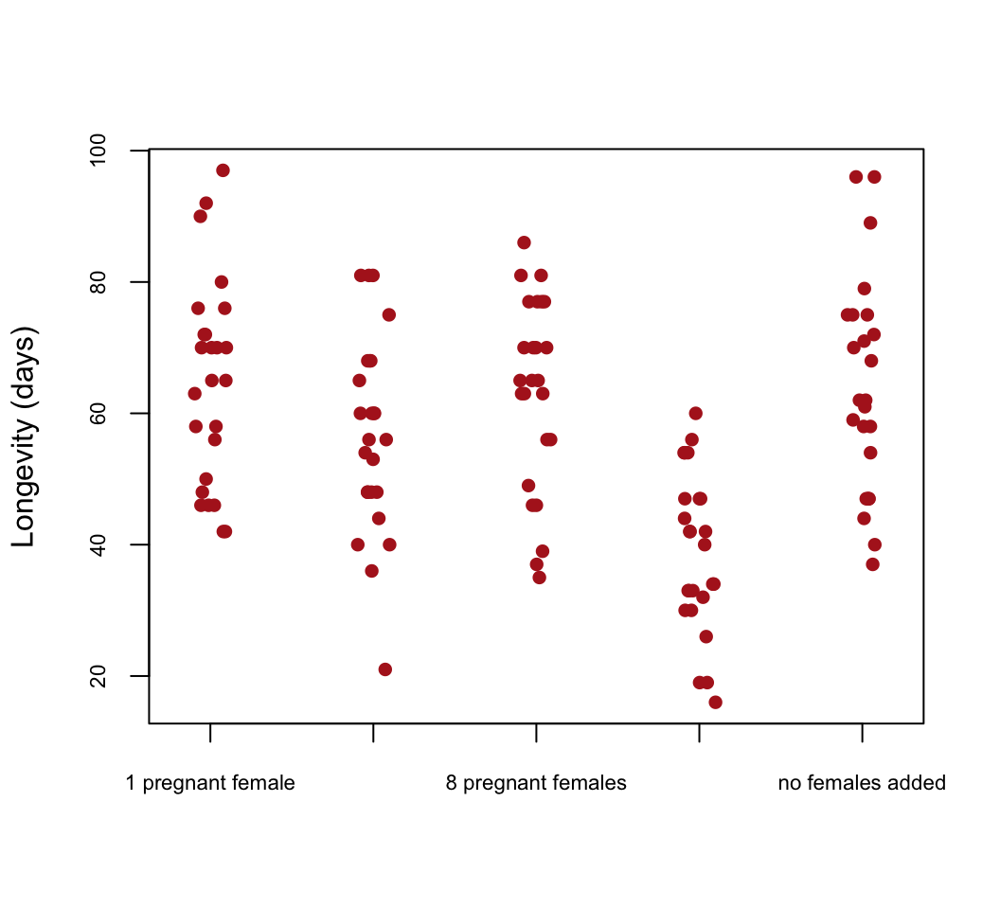
or using ggplot()
# Using ggplot
ggplot(x, aes(x = treatment, y = longevity.days)) +
geom_jitter(color = "firebrick", size = 3, width = 0.15) +
labs(x = "Treatment", y = "Longevity (days)") +
theme_classic()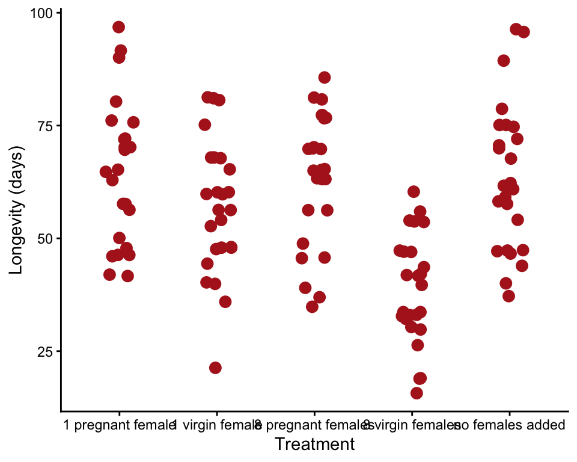
- Box plot.
boxplot(longevity.days ~ treatment, data = x, cex.axis = 0.7,
ylab = "Longevity (days)", boxwex = 0.5, col = "goldenrod1")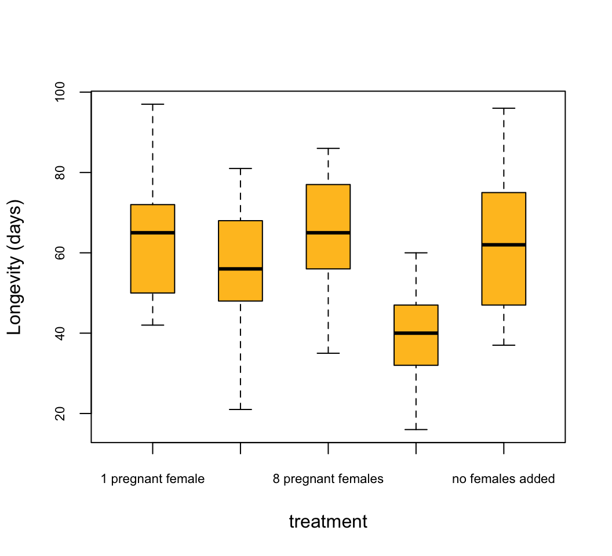
or using ggplot()
ggplot(x, aes(x = treatment, y = longevity.days)) +
geom_boxplot(fill = "goldenrod1", width = 0.5) +
labs(x = "Treatment", y = "Longevity (days)") +
theme_classic()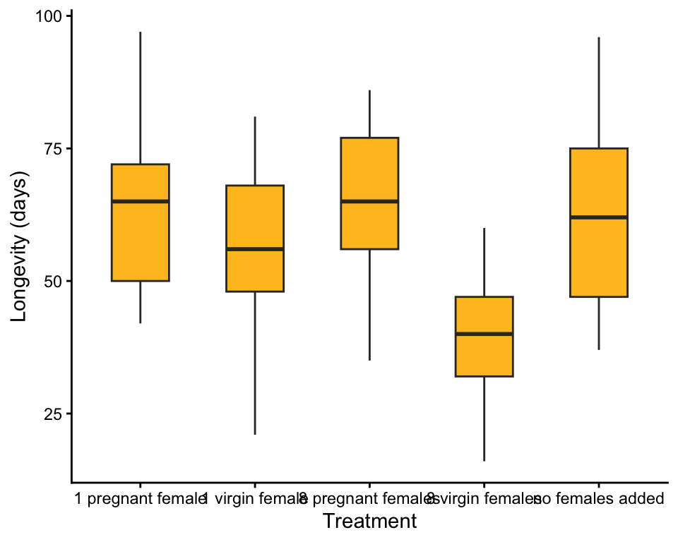
- Scatter plot
# base R
plot(longevity.days ~ thorax.mm, data = x, pch = 16, col = "firebrick", las = 1,
xlab = "Thorax length (mm)", ylab = "Longevity (days)")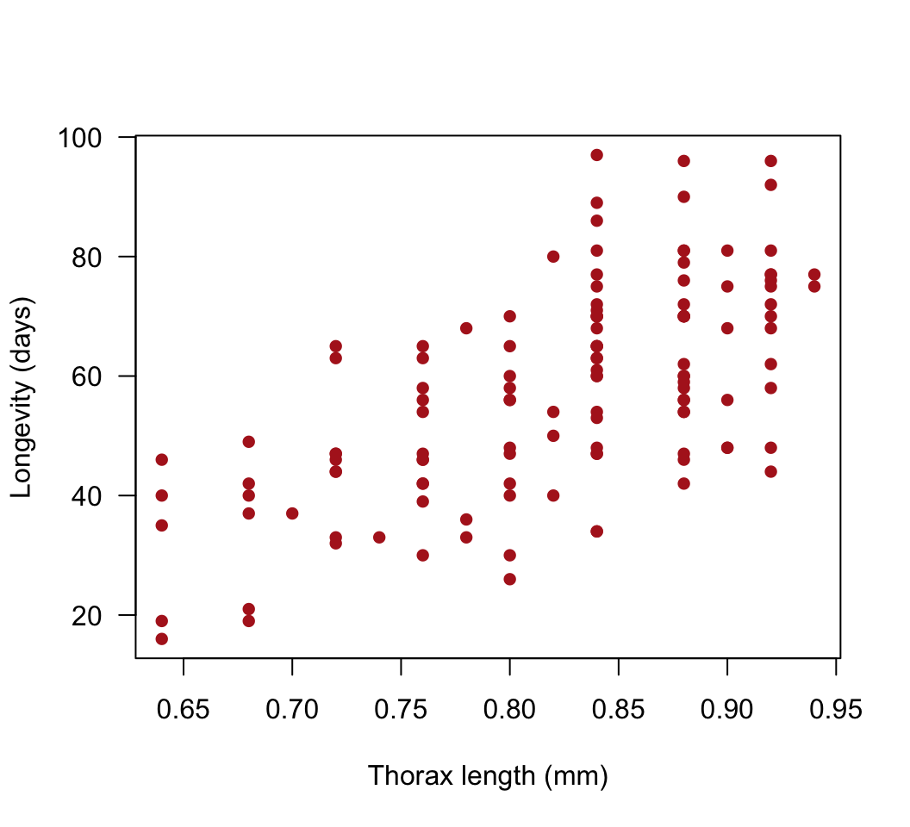
or using ggplot()
ggplot(x, aes(x = thorax.mm, y = longevity.days)) +
geom_point(size = 3, col = "firebrick") +
labs(x = "Thorax length (mm)", y = "Longevity (days)") +
theme_classic()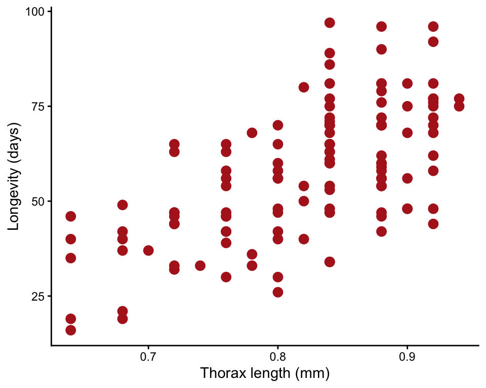
- Scatter plot with separate colors for each group using
ggplot()
ggplot(x, aes(x = thorax.mm, y = longevity.days, colour = treatment,
shape = treatment)) +
geom_point(size = 2) +
labs(x = "Thorax length (mm)", y = "Longevity (days)") +
theme_classic()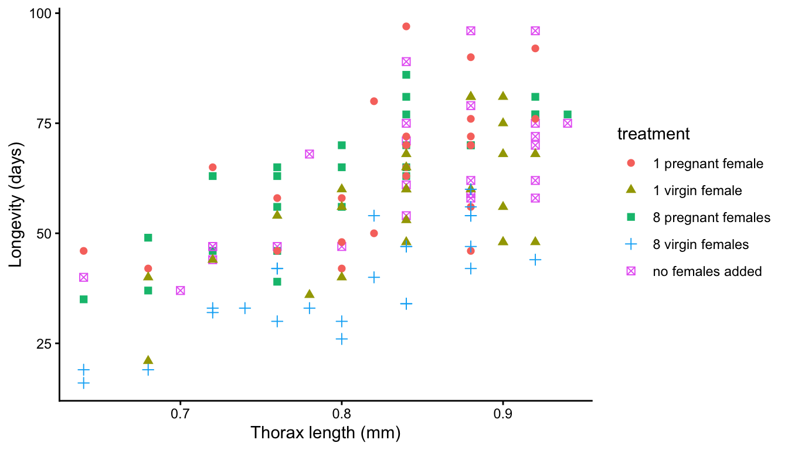
Here’s how you would draw a scatter plot with separate colors and symbols for each group using base R. After executing, touch the plot frame with the cursor.
plot(longevity.days ~ thorax.mm, data=x, pch=as.numeric(factor(treatment)),
col = as.numeric(factor(treatment)), las = 1,
xlab = "Thorax length (mm)", ylab = "Longevity (days)")
legend( locator(1), legend = as.character(levels(factor(x$treatment))),
pch=1:length(levels(factor(x$treatment))),
col=1:length(levels(factor(x$treatment))) )# 6. Add lines using ggplot()
ggplot(x, aes(x=thorax.mm, y=longevity.days, colour = treatment,
shape = treatment)) +
geom_point(size = 2) +
geom_smooth(method = lm, linewidth = 1, se = FALSE) +
labs(x = "Thorax length (mm)", y = "Longevity (days)") +
theme_classic()## `geom_smooth()` using formula = 'y ~ x'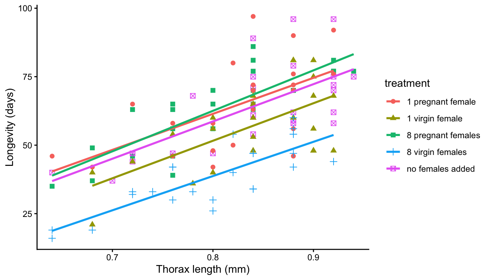
- Using
facet_wrap()to plot treatment groups in separate panels.
ggplot(x, aes(x = thorax.mm, y = longevity.days)) +
facet_wrap(~ treatment, strip.position = "top") +
geom_point(size = 2) +
geom_smooth(method = lm, linewidth = 1, se = FALSE) +
labs(x = "Thorax length (mm)", y = "Longevity (days)") +
theme_classic()## `geom_smooth()` using formula = 'y ~ x'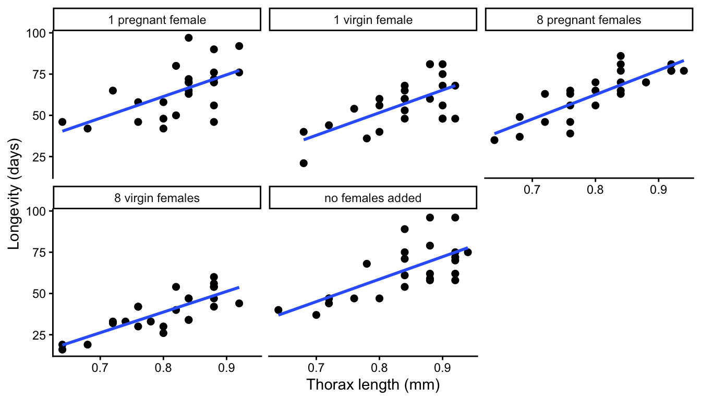
* In this mammal data set, the symbol “NA” is used to indicate
North America in the continent column. But in R, NA means
missing data. To read properly, you will need to add an argument to your
read.csv() command that changes the missing data code:
na.strings=““ (or na=”“ if you are using
read_csv() from the readr package).
© 2009-2026 Dolph Schluter